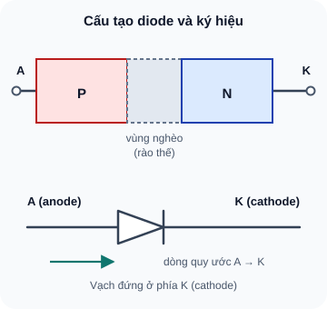
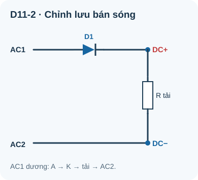
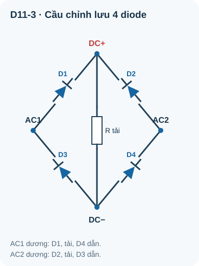

Diode — Nguyên Lý & Ứng Dụng
Linh kiện bán dẫn đầu tiên — van một chiều của điện tử, nền tảng của mọi mạch chỉnh lưu và bảo vệ.
- Hiểu diode là gì và tại sao chỉ dẫn dòng một chiều
- Phân biệt phân cực thuận (forward bias) và nghịch (reverse bias)
- Hiểu và đọc đặc tuyến I-V của diode
- Biết điện áp thuận V_f và điện áp đánh thủng V_BR
- Phân biệt các loại diode: 1N4007, 1N4148, Schottky, Zener
- Lắp mạch chỉnh lưu bán sóng và toàn sóng (cầu diode)
- Ứng dụng: bảo vệ cực tính, clamping, chỉnh lưu nguồn
- Đo và kiểm tra diode bằng multimeter chế độ diode
Dụng cụ và linh kiện
| Tên | Thông số | SL |
|---|---|---|
| Diode 1N4007 | 1A, 1000V PIV — diode chỉnh lưu thông dụng nhất | 4 |
| Diode 1N4148 | 200mA, 75V — diode tín hiệu nhỏ nhanh | 4 |
| LED đỏ 5mm | Diode phát quang — đã quen từ Bài 4 | 1 |
| Tụ điện 1000µF/25V | Tụ lọc cho mạch chỉnh lưu | 1 |
| Điện trở 470Ω, 1kΩ | ¼W | 2 mỗi loại |
| Nguồn AC 6–12V (adapter có thể đo) | Hoặc máy biến áp nhỏ nếu có — KHÔNG dùng 220V | 1 |
| Breadboard + multimeter | — | 1 bộ |
1. Diode — Cấu tạo và nguyên lý hoạt động
Diode là linh kiện bán dẫn có hai cực: anode (A) và cathode (K), được tạo thành từ tiếp giáp P-N — một vùng bán dẫn loại P (nhiều lỗ trống) tiếp xúc với một vùng bán dẫn loại N (nhiều electron tự do). Tại vùng tiếp giáp, electron và lỗ trống kết hợp với nhau tạo ra vùng nghèo (depletion region) — một "rào thế" tự nhiên.

Đọc mô tả D11-1
Cấu trúc P-N có vùng nghèo giữa hai bán dẫn; cực A nối phía P, cực K nối phía N. Ký hiệu mạch là tam giác hướng từ A sang K với vạch đứng ở phía K. Dòng quy ước đi từ A sang K khi phân cực thuận.
1.1 Phân cực thuận — Forward Bias
Khi đặt điện áp dương vào anode (A) và âm vào cathode (K), rào thế bị thu hẹp. Khi V_AK đủ lớn (~0,6–0,7V với diode silicon; ~0,2–0,3V với diode Schottky), rào thế bị thắng, dòng điện chạy từ A → K. Diode dẫn điện.
1.2 Phân cực nghịch — Reverse Bias
Khi đặt điện áp dương vào cathode (K), rào thế càng rộng ra. Gần như không có dòng điện chạy qua (chỉ có dòng rỉ cực nhỏ nA–µA). Diode không dẫn điện. Nếu điện áp nghịch tăng quá cao (V_BR — breakdown voltage), diode bị đánh thủng và hỏng.
| Trạng thái | V_AK | Dòng qua diode | Mô hình đơn giản |
|---|---|---|---|
| Phân cực thuận | > V_f ≈ 0,6–0,7V | Lớn (mA–A) | Ngắn mạch + V_f cố định |
| Vùng ngưỡng | 0 → V_f | Nhỏ, phi tuyến | — |
| Phân cực nghịch | < 0V | Cực nhỏ (nA–µA) | Hở mạch |
| Đánh thủng | < –V_BR | Lớn đột ngột (hỏng) | Nguy hiểm (trừ Zener) |
2. Các loại diode thông dụng
| Loại | Mã | V_f | I_max | V_BR | Dùng cho |
|---|---|---|---|---|---|
| Chỉnh lưu (Rectifier) | 1N4007 | 0,7V | 1A | 1000V | Chỉnh lưu AC→DC, bảo vệ nguồn |
| Tín hiệu nhỏ (Signal) | 1N4148 | 0,7V | 200mA | 75V | Clamping, logic, switching nhanh |
| Schottky | 1N5819, SS14 | 0,2–0,3V | 1–3A | 40–60V | Hiệu suất cao, DC-DC, điều chỉnh nguồn |
| Zener | 5V1, 3V3... | 0,7V thuận | — | Xác định (3,3V–100V) | Ổn áp tham chiếu, bảo vệ quá áp |
| LED | Đỏ, xanh... | 1,8–3,5V | 20–50mA | 5–10V | Phát sáng — đã học Bài 4 |
Diode Schottky dùng tiếp giáp kim loại–bán dẫn thay vì P-N. Không có vùng nghèo P-N → rào thế thấp hơn (0,2–0,3V thay vì 0,6–0,7V). Điều này rất quan trọng trong mạch pin: với V_f=0,7V, bạn tốn 0,7V chỉ để "vào" diode bảo vệ; với Schottky chỉ tốn 0,2–0,3V → tiết kiệm điện áp và hiệu suất tốt hơn.
3. Mạch chỉnh lưu — Rectifier
3.1 Chỉnh lưu bán sóng (Half-Wave Rectifier)

Đọc mô tả D11-2
AC1 nối anode D1. Cathode tạo DC+. Tải điện trở nối DC+ đến AC2/DC−. Khi AC1 dương so với AC2, dòng đi qua D1 rồi tải về AC2; nửa chu kỳ âm D1 khóa. Trung bình Vpeak/π chỉ đúng mô hình diode lý tưởng không có tụ lọc.
3.2 Chỉnh lưu toàn sóng cầu (Full-Wave Bridge Rectifier)

Đọc mô tả D11-3
Bốn nút AC1, AC2, DC+, DC−. D1 anode AC1 cathode DC+; D2 anode AC2 cathode DC+; D3 anode DC− cathode AC1; D4 anode DC− cathode AC2. Bán kỳ AC1 dương dẫn qua D1, tải, D4; bán kỳ AC2 dương dẫn qua D2, tải, D3. Hai diode dẫn mỗi bán kỳ. Chỉ dùng AC thấp áp cách ly.
Sau mạch chỉnh lưu, điện áp vẫn có gợn sóng (ripple). Tụ điện lớn (1000µF–10000µF) đặt song song với tải giúp làm phẳng điện áp. Tụ lớn hơn → ripple nhỏ hơn → điện áp DC sạch hơn. Đây là nguyên lý của mọi adapter điện tử.
4. Thực hành: Đo diode và lắp mạch bảo vệ cực tính
Chọn chế độ diode trên multimeter. Que đỏ vào anode, que đen vào cathode (vạch trên thân = cathode).
Đo V_f của 1N4007: kỳ vọng 0,6–0,7V. Ghi lại.
Đo V_f của 1N4148: kỳ vọng 0,6–0,7V (tương tự nhưng thường hơi thấp hơn). Ghi lại.
Đổi que đo (que đỏ vào cathode, que đen vào anode): màn hình hiển thị "OL" = diode tốt, không dẫn nghịch.
Một trong những ứng dụng thực tế nhất của diode: bảo vệ mạch khỏi cắm ngược nguồn điện.
Lắp mạch: nguồn (+) → D1(1N4007) → LED đỏ + R(470Ω) → GND. Kết nối đúng chiều: LED sáng.
Đo V_out sau diode (trước LED): kỳ vọng = V_supply – V_f ≈ 5 – 0,7 = 4,3V.
Đổi cực nguồn (cắm ngược): LED tắt — diode chặn hoàn toàn. Mạch được bảo vệ!
Đo V sau diode khi cắm ngược: gần 0V. Diode đang phân cực nghịch → không dẫn.
5. Debug — Lỗi thường gặp với diode
| Hiện tượng | Nguyên nhân | Kiểm tra | Xử lý |
|---|---|---|---|
| Diode đo V_f = 0V (hai chiều) | Diode bị ngắn mạch (shorted) — thường do quá dòng hoặc quá áp nghịch | Đo hai chiều: nếu cả hai đều ~0V → hỏng | Thay diode mới; kiểm tra nguyên nhân gây hỏng |
| Diode đo OL cả hai chiều | Diode bị hở mạch (open) — tiếp giáp P-N bị phá hủy | Đo hai chiều đều OL | Thay diode mới |
| Mạch chỉnh lưu ra điện áp thấp hơn mong đợi | Mỗi diode sụt 0,7V; cầu 4 diode sụt 2 × 0,7V = 1,4V | Tính V_out = V_peak – 1,4V (hoặc –0,7V với bán sóng) | Dùng Schottky để giảm sụt áp xuống còn 2 × 0,3V = 0,6V |
1: Với diode lý tưởng, điện áp trung bình toàn sóng = 2 × 12/π ≈ 7,64 V. Hai diode thật dẫn mỗi bán kỳ nên trung bình thực tế thấp hơn (khoảng 6,3 V nếu lấy V_f≈0,7 V); không được nhân 0,636 với (V_peak–1,4) vì diode ngừng dẫn gần điểm qua 0. Sau tụ đủ lớn và tải nhẹ, đỉnh xấp xỉ 12–1,4 = 10,6 V, còn điện áp trung bình phụ thuộc tải, tần số và độ gợn.
2: 1N4007 sụt 0,7V; Schottky sụt 0,3V. Với nguồn 5V: 1N4007 còn 4,3V (14% tổn thất); Schottky còn 4,7V (6% tổn thất). Cải thiện ~8% — quan trọng khi chạy bằng pin.
3: Khi tín hiệu bình thường (dương): diode phân cực nghịch → không ảnh hưởng. Khi tín hiệu âm: diode phân cực thuận → kẹp điện áp tại khoảng –0,7V → bảo vệ input ADC/GPIO khỏi điện áp âm phá hủy.
4: Diode silicon (V_f=0,68V ≈ 0,7V silicon). Kiểm tra tốt: thuận dẫn (0,68V), nghịch chặn (OL) → Diode tốt.
5: Dây (+): 12V(+) ──[D: 1N4007]──→ VCC_circuit. Cathode (vạch) vào mạch. Đặt ở dây (+) để khi cắm ngược, diode chặn hoàn toàn và không có dòng nào vào mạch từ bất cứ hướng nào.